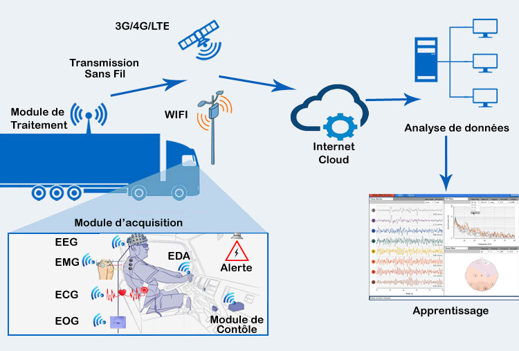

Wireless Sensing based System for Sleepy state Detection of car driver
Wireless Sensing based System for Sleepy state Detection of car driver
Research
Existing Driver Drowsiness Detection Technolgies
Proposed Architecture
Due to the increasing interest in the use of wearable physiological or bio-sensor systems, many communication architectures have been proposed depending on the target application. The proposed general architecture of bio-sensor system is composed by three main modules: (i) signal acquisition, (ii) data processing, and (iii) control modules as depicted in the Figure.
This module is composed of different physiological wearable sensors such as EMG, ECG, EOG, EEG, etc. attached to the body which measure physiological signals. These sensors form a network and communicate with the network coordinator to send data. The measured signals are then filtered and transformed to remove any noise and artefact that may affect the quality of sensed data values.
Signals are received from acquisition module after filtering noise and removing artefacts. As second stage, signals are processed to extract the main features that reflect different states of the target application (e.g. the cognitive states of driver). These features are then passed to the training and classification algorithms to determine the new measured states. As for driver drowsiness, the features can be used to determine in which level of alertness the driver is.
Driver alertness is monitored in real time using acquisition and data processing modules. Whenever a drowsy state is identified, the detection event is then triggered by the control module to make the appropriate action in time. This action may be an alarm or buzz inside the vehicle to alert or wake-up the driver. The action may take control of the vehicle in order to speed-down or stop the vehicle.

Many portable systems propose to incorporate the acquisition and the processing modules into the same component to compact the system. Hence, there is a serious issue with the battery lifetime. In the context of driver drowsiness detection, we propose to wear the acquisition module to the driver and install the processing module on the vehicle which has sufficient power supply. This allows extending the battery lifetime and keep monitoring for long periods. The control module is mounted on the vehicle to trigger warning messages and sound alerts. This module can be even enabled to control some actions of the vehicle such as acceleration and speed. The system can be extended to support multi-tiers cloud-based architecture. As depicted in Figure, we propose to send securely some of data via 3G/4G/LTE connections to the remote servers where data analytic algorithms can be used to train and extract new knowledge. This enables monitoring cognitive states during real driving tasks from large number of drivers and may be explored by the research community to enrich training sets and improve the accuracy of existing detection algorithms.